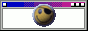
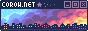

nearby

has an incredible layout which inspired my own and bursting with passioniate pages about biology and personal projects. i love the dithered images.
oozing with so much crunchy low poly charm! everything is presented in such a way that i want to CONSUME IT. i hope it gets some more updates

calm radio and soothing palette is so relaxing. i really enjoyed the lovely shrines and evocative poetry and wish them the best
unapologetically bleeding bright colours and dumb sfx at every turn. it's so beautifully eclectic and creative just like the rest of their incredible art


cycle ring neighbour whos website is buzzing with personality, style and rambles. the soundtrack here is also such a mood and they were the first person to link me :D)
fellow 2006 brit who gets obsessed with media. the website's early internet vibes really struck a chord with me and i'm eagerly awaiting the new site design


i love the cute comics and they styled the website in the same way.the little guinea pig dollhouse and the spooky zone are so freaking awesome
the ridiculous amount of graphics and glitter throughout tickles my brain and WOW THERE'S SO MANY UNIQUE SHRINES


fellow lego monkie kid enjoyer who has some really cool shrines and a massive backlog of articles. i found the discourse and culture ones very interesting
living inside of an analogue horror pc is such a vibe.
their art genuinely blows me away and i felt such a connection to e- in their travels
the den of a grungy tired artist full of charm and style. i laughed my ass off at a certain shrine and the quiz and room tour were great
this site is genuinely just a point and click adventure at this point that's how polished it is. i'll let you experience it firsthand

off-grid

really awesome solaris vibe, hilarious 'guestbook', whimsical articles and a really fun secret to discover
graffiti, photography and the absurdly extensive cave system and dreamwiki here are extremely charming


has a fun creature report for a made-up animal and some cool projects and media logs all wrapped up in a cute windows vibe
there's so much creativity here! i'm especially fond of their comics, claywork and encyclopedia of fantasy creatures

fun

what more can i say but hogs? famous hogs, false hogs, hog decor, hog memes but also some personal stuff
full of extremely charming fungi ascii art. a very relaxing stroll/scroll through the woods
more to come as i explore more of the indie web...